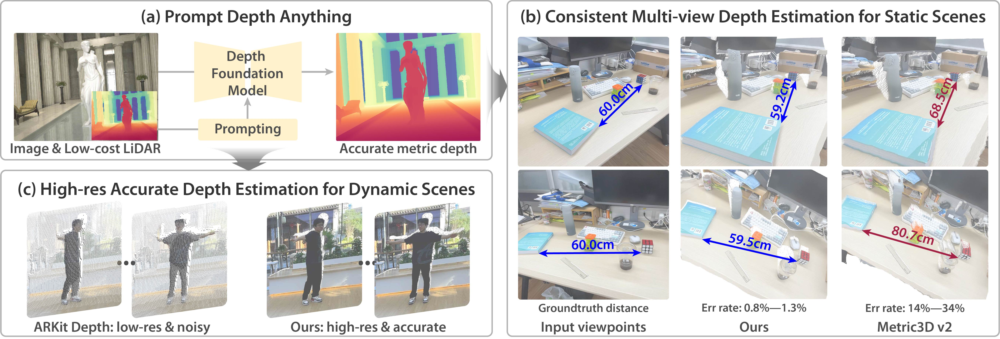

Abstract

Prompts play a critical role in unleashing the power of language and vision foundation models for specific tasks. For the first time, we introduce prompting into depth foundation models, creating a new paradigm for metric depth estimation termed Prompt Depth Anything. Specifically, we use a low-cost LiDAR as the prompt to guide the Depth Anything model for accurate metric depth output, achieving up to 4K resolution. Our approach centers on a concise prompt fusion design that integrates the LiDAR at multiple scales within the depth decoder. To address training challenges posed by limited datasets containing both LiDAR depth and precise GT depth, we propose a scalable data pipeline that includes synthetic data LiDAR simulation and real data pseudo GT depth generation. Our approach sets new state-of-the-arts on the ARKitScenes and ScanNet++ datasets and benefits downstream applications, including 3D reconstruction and generalized robotic grasping.